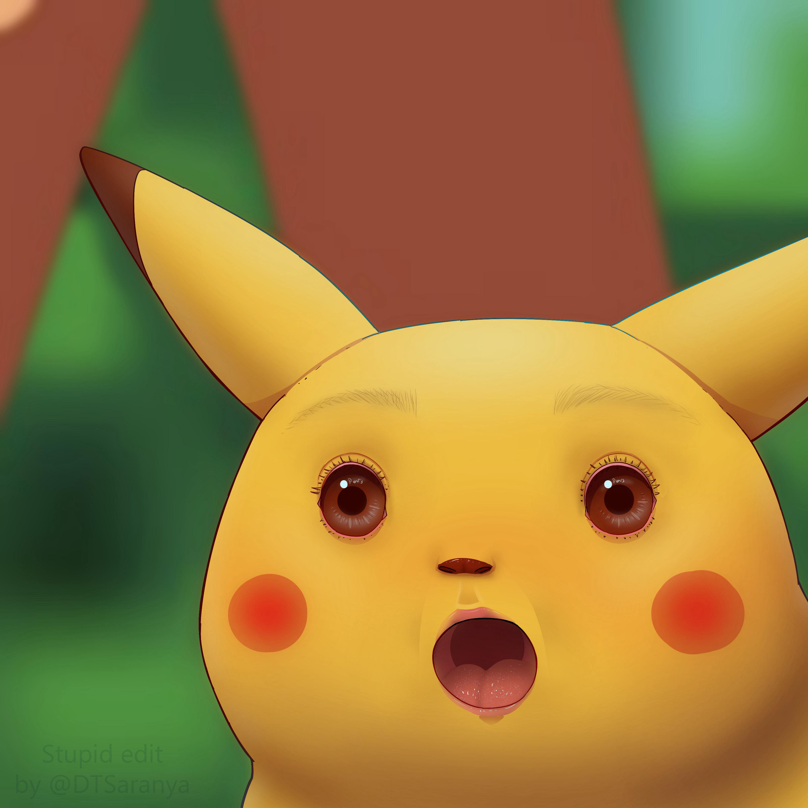
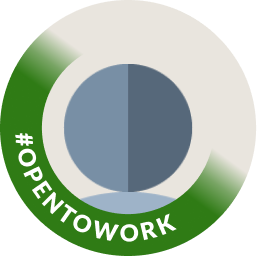
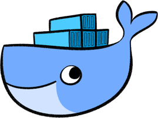

Estrangulando
o legado
modernizando aplicações PHP sem desligar o sistema
PHP Velho Oeste 2026
Alessandro Feitoza
- Fortaleza, Ceará
- Professor de códigos e outras computarias
- Programador/Dev/Severino
- PHP com Rapadura | PHPeste
- Bússola Social

Por que dessa palestra?
PHP tem 30+ e ele não é o problema. O problema é o problema!
Agenda
- Problematização
- Contexto de solução
- Exemplo de transformação
- O pulo do gato
Quem aqui já mexeu em produção?
E quem já mexeu sem ter nenhum tipo de medo?
Talvez algo assim...
- arquivo_final.php
- arquivo_final_agora_vai.php
- arquivo_final_v2.php
- arquivo_final_v2_corrigido.php
- arquivo_final_v2_corrigido_agora_vai.php
Porque normalmente...
🤷
ninguém entende tudo
⚠️
há efeitos colaterais
🕵️
regras escondidas
🎲
deploy parece loteria
Todo mundo
tem legado
Mas o que diabos é isso de legado?
Legado
do Latim, Legatum
"algo deixado em testamento"
Deriva de legare ( delegar / encarregar)
- É por que ele usa PHP < 7?
- É porque foi feito há 5 anos?
- É porque é um monolito?
coisas pra ficar de olho...
- Alguns* anos de produção
- dependências antigas
- muito medo envolvido
coisas pra ficar de olho...
- Alguns* anos de produção
- regras críticas
- dependências antigas
- deploy manual
- muito medo envolvido
Todo mundo
tem legado
Mas, Sistema legado
dá dinheiro
talvez ele não seja tão ruim assim.
O legado normalmente...
[SUCCESS] Sustenta o negócio
[SUCCESS] Gera Receita
[SUCCESS] Resolve Problemas reais
[SUCCESS] Sobreviveu ao tempo
[SUCCESS] Acertou*
Então qual é
o problema?
O problema não é o legado
- é depender de poucas pessoas
- é o medo de alterar
- é arquitetura impedir evolução
- é não conseguir digivolver

O sistema
continua vivo
mas o time para
Então surge
a ideia...
“Simbora reescrever tudo”
O famoso
Big Bang Rewrite
Normalmente a promessa é:
vamos fazer
do jeito certo
tecnologias
novas
resolver
tudo
em poucos
meses
IA vai
acelerar
Mas aí...

- meses sem entregar valor
- duas versões do sistema
- regras esquecidas
- retrabalho
- burnout
caos
// .phtml
<table>
<?php
$con = include 'conexao.php';
$clients = mysqli_query($con, "SELECT * FROM tb_clients";
while ($item = mysql_fetch_assoc($clients)) {
echo "<tr>
<td>{$item['nome']}</td>
</tr>";
}
?>
</table>
// .blade.php
<table>
<?php
$clients = App\Models\Client::all();
foreach ($clients as $item) {
echo "<tr>
<td>{$item->nome}</td>
</tr>";
}
?>
</table>
// .blade.php
<table>
<?php
$clients = App\Models\Client::all();
foreach ($clients as $item) {
$qtd_compras = $item->compras()->count();
echo "<tr>
<td>{$item->nome}</td>
<td>{$qtd_compras}</td>
</tr>";
}
?>
</table>
// .blade.php
// O novo legado!
<table>
<?php
$clients = App\Models\Client::all();
foreach ($clients as $item) {
// N+1 Query
$qtd_compras = $item->compras()->count();
echo "<tr>
<td>{$item->nome}</td>
<td>{$qtd_compras}</td>
</tr>";
}
?>
</table>
pagando as contas
E geralmente
o problema não é
tecnologia.
É logística.
Porque existe um detalhe...
Então talvez
a pergunta certa
não seja...
“como reescrever?” e sim
“como evoluir
sem desligar?”
Strangler Fig Pattern
Fig (Figueira)
Gameleira / Abraço da Morte
O sistema novo cresce aos poucos ao redor do sistema antigo. Até sufocar o antigo
Sem desligar
produção
Sem migração
traumática
Sem parar de entregar valor
A árvore original
Algo começa a mudar...
Coexistência
Até que...
Martin Fowler - 2004
Transformar, Coexistir, Eliminar
Antes
Primeira mudança
Estrangulamento começa
Convivência
Legado
O usuário nem percebe.
Estratégia incremental
- clientes → novo
- financeiro → legado
- relatórios → legado
- migração gradual
Com pequenos passos vem pequenos riscos
E o PHP hein?
Vai morrer?
Imagine um sistema...
Cenário bem realista
- PHP 5.x
- sem Composer
- mysql_query
- deploy via FTP
- sem testes
- não pode parar
Talvez algo assim...
include('conexao.php');
$sql = mysql_query(
"SELECT * FROM clientes"
);
while ($cliente = mysql_fetch_assoc($sql)) {
echo $cliente['nome'];
}
Quem nunca?
class ClienteController {
public function salvar() {
$sql = "
INSERT INTO clientes (nome, email)
VALUES ('{$this->nome}', '{$this->email}')
";
mysqli_query(Conexao::con(), $sql);
header("location: /clientes?success=1");
}
}
$.ajax({
url: "/clientes",
success: function(clientes) {
clientes.forEach(function(cliente) {
$("#lista").append(
"" + cliente.nome + " "
);
});
}
});
E aí nasce
o medo.
Porque normalmente...
- ninguém entende tudo
- há dependências escondidas
- side effects inesperados
- regras invisíveis
Mas o Strangler
muda a pergunta.
Não é:
“vamos trocar tudo?”
É:
“qual módulo
precisamos migrar?” e por que?
Exemplo
- clientes → candidato ideal
- financeiro → ainda legado
- pedidos → depois
Então nasce
o primeiro módulo novo
Route::get('/clientes', function () {
return Cliente::all();
});
Só clientes mudou.
O resto continua vivo.
Mas existe
um detalhe...
Quem decide
quem responde?
location /clientes {
proxy_pass http://novo-sistema;
}
location / {
proxy_pass http://legado;
}
O usuário nem percebe.
Mas a arquitetura
mudou.
E o mais interessante...
Convivência tecnológica
- PHP antigo
- PHP moderno
- Laravel/Symfony/etc
- procedural
- Docker
- tudo coexistindo

mas aí virou suruba, só que organizada
Pode existir os dois.
Na psicologia chamamos isso de
Terapia Dialética
Buscar o equilibrio entre Aceitação e Mudança
E o que
ganhamos com isso?
Benefícios imediatos
Pequeno deploy.
Pequeno impacto.
Também ganhamos
- aprendizado incremental
- menor medo
- feedback rápido
- redução gradual do débito técnico
em parcelas.
Mas existe
um perigo...
Migrar rápido demais
Problemas comuns
módulos
acoplados
integrações
quebradas
regras
esquecidas
sem
observabilidade
Antes de migrar
Você precisa de:
Senão você só
move o caos.
E nem tudo precisa
de Strangler Pattern
Talvez não faça sentido quando:
- o sistema é pequeno
- há pouco risco
- baixa complexidade
- reescrever é barato
Não é
bala de prata.
Porque no fim...
O legado não é
o inimigo.
não seja o mais moderno.
evoluir sem parar o negócio.
Modernizar Software
não é HYPE.
É logística.
Qual legado você quer deixar?
Bom, como dizia minha ex:
Terminamos
Referências
Valeu o Boi,
valeu o Vaqueiro
@alessandro_feitoza
Linkedin:
/in/AlessandroFeitoza
slides.feitoza.tec.br